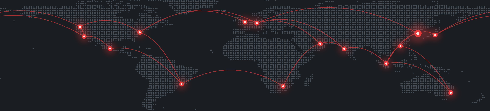

Session 3 · AI 시대 개발 역량 세미나
이규원 · 샵라이브 CTO
2026. 10. 24 · 패스트캠퍼스
Agentic Coding
Spec-Driven Development
Context Engineering
Harness Engineering
Subagents
Agent Skills
MCP
Evals
AI Code Review
REA
A2A
Background Agents
이것들이 바꿔 놓은 다른 것을 이야기합니다
샵라이브가 일하는 방식
02
샵라이브
300+
엔터프라이즈 고객사
20+
글로벌 서비스 국가
1,200+
매일 진행되는 라이브 방송
2억+
Mobile SDK 적용 고객사 앱 MAU
샵라이브가 일하는 방식
03

시스템 규모와 복잡도
20개국 이상에서, 0.5초 이내로 라이브를 송출합니다
송출부터 시청까지 직접 만든 스트리밍 스택
알림 한 번에 시청자가 몰려도 끊기면 안 됩니다
영상 · 채팅 · 커머스 · AI가 동시에 작동합니다
방송이 멈추면 고객 매출도 그 자리에서 멈춥니다
샵라이브가 일하는 방식
04
모든 판단의 출발점
설치로 끝내지 않습니다
라이브 기획과 국내외 맞춤 개발을 넘어, 고객의 매출 성장까지 함께합니다
샵라이브가 일하는 방식
05
샵라이브가 일하는 방식
06
과거의 가정
그래서 코드를 제대로 쓰려고, 앞 단계에 공을 많이 들였습니다
요구사항 문서
며칠
디자인 시안
며칠
아키텍처 설계
며칠
티켓·스프린트
계획
며칠
코드 작성
몇 주
샵라이브가 일하는 방식
07
깨진 가정
이제 가장 싼 단계가 코드 작성입니다
요구사항 문서
며칠
디자인 시안
며칠
아키텍처 설계
며칠
티켓·스프린트
계획
며칠
코드 작성
몇 분
샵라이브가 일하는 방식
08
Anthropic
8배
엔지니어 1인당 하루 머지하는 코드량
2024년 대비, 2026년 2분기
25%
2024.10
50%
2025 하반기
75%
2026.4
신규 코드 중 AI가 생성한 비율
출처: Anthropic Institute, “When AI builds itself” (2026.6) · Google CEO Sundar Pichai 블로그 (2026.4)
샵라이브가 일하는 방식
09
많은 조직이 AI로 이 흐름을 더 빨리 진행하려 합니다
요구사항 문서
디자인 시안
아키텍처 설계
티켓·스프린트
계획
코드 작성
문제는, 이 흐름 자체가 깨진 가정 위에 있다는 것입니다
샵라이브가 일하는 방식
10
그렇다고 새 규칙을 세울 만큼 지식이 충분히 쌓이지도 않았습니다
샵라이브가 일하는 방식
11
어떤 도구가 모든 팀의 효율을 높일지, 아직 확신할 수 없습니다
샵라이브가 일하는 방식
12
핵심가치
모든 의사결정은 고객에서 시작하고 고객으로 끝냅니다
문제는 수작업이 아닌 프로덕트와 기술로 해결합니다
완벽함을 기다리지 않고 빠르게 실행하고 배웁니다
신뢰를 바탕으로 협업하고, 결과에 책임집니다
샵라이브가 일하는 방식
13
Customer First, Always
요구사항은 누가 정리할까요?
엔지니어
고객의 요구를 직접 듣고, 직접 정리합니다
샵라이브가 일하는 방식
14
Customer First, Always
엔지니어
요구사항 전달 단계
고객 · 비즈니스
의사소통 구조가 단순해지면서 비용도, 전달 오류도 줄어듭니다
샵라이브가 일하는 방식
15
Move Fast, Ship Fast
디자인
시안부터 그리지 않습니다
동작하는 프로토타입부터 만듭니다
작업 관리
이슈 트래커는 느립니다
스프레드시트나 위키 문서로 충분합니다
일정
이터레이션 단위로 묶지 않습니다
끝나는 대로 바로 출시합니다
샵라이브가 일하는 방식
16
Move Fast, Ship Fast
전통적 흐름
몇 주
요구사항 문서
디자인 시안
아키텍처 설계
티켓·스프린트
계획
코드 작성
샵라이브
1~3일
스레드 요청
프로토타입 검토
코드 작성
출시
샵라이브가 일하는 방식
17
Team Player with Ownership
샵라이브가 일하는 방식
18
Team Player with Ownership
그 책임의 기준은 각자의 판단이 아니라 핵심가치입니다
샵라이브가 일하는 방식
19
Team Player with Ownership
TL;DR이 먼저입니다
내 시간을 아끼려고 남의 시간을 쓰지 않습니다
이렇게 쓰지 않습니다
안녕하세요, 어제부터 이것저것 확인해 봤는데요, 원인이 몇 가지 있을 수 있을 것 같아서 로그를 계속 보고 있습니다. 혹시 비슷한 거 보신 분 있으면…
이렇게 씁니다
TL;DR 원인은 캐시 만료 설정입니다. 오늘 배포로 해결합니다.
· 영향: 일부 화면에서 상품 정보 갱신 지연
· 조치: 만료 시간 수정, 오늘 오후 배포
· 요청: 배포 후 고객사 화면 확인 부탁드립니다
예시 메시지
샵라이브가 일하는 방식
20
Agentic Coding
Spec-Driven Development
Context Engineering
Harness Engineering
Subagents
Agent Skills
MCP
Evals
AI Code Review
REA
A2A
Background Agents
도구 학습과 엔지니어링에도 많이 투자합니다
샵라이브가 일하는 방식
21
가장 비싼 단계는
더 이상 코드 작성이 아닙니다
샵라이브가 일하는 방식
22
에이전트를 써도 필요한 기본기
견고한
기술 지식
익숙한 방식을 깨는 힘
파괴적인
창의성
둘 다 필요한 시기입니다
그 둘을 묶는 것은 목적에 집중하는 책임감입니다
샵라이브가 일하는 방식
23
핵심가치를 더 잘 구현할 방법을 계속 찾아갑니다
Customer First,
Always
Solve with Product
& Technology
Move Fast,
Ship Fast
Team Player
with Ownership
샵라이브가 일하는 방식
24
이규원 · 샵라이브 CTO
Session 3 · AI 시대 개발 역량 세미나 · 2026. 10. 24
Q&A